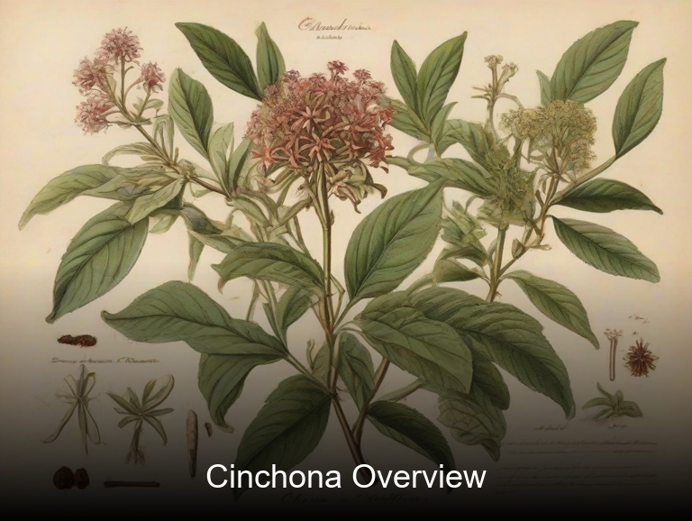
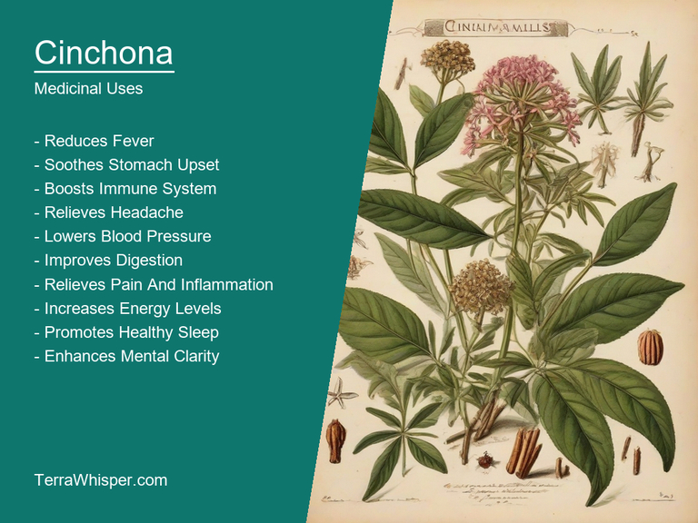
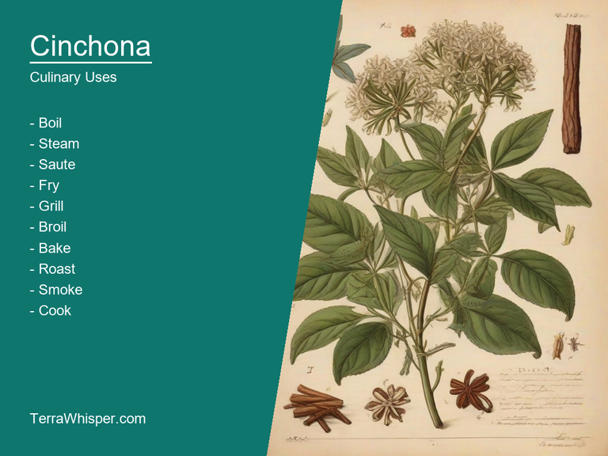
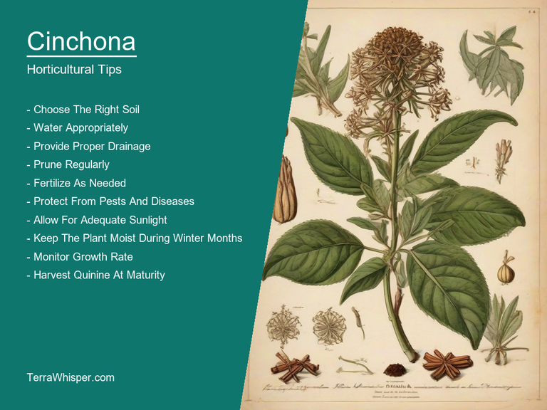
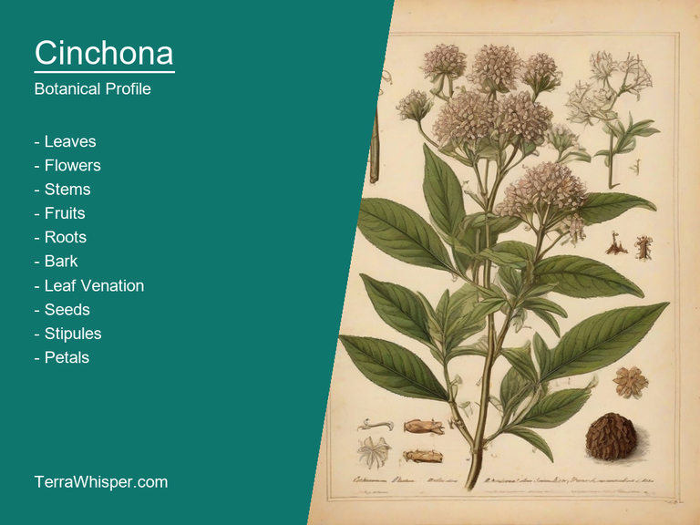
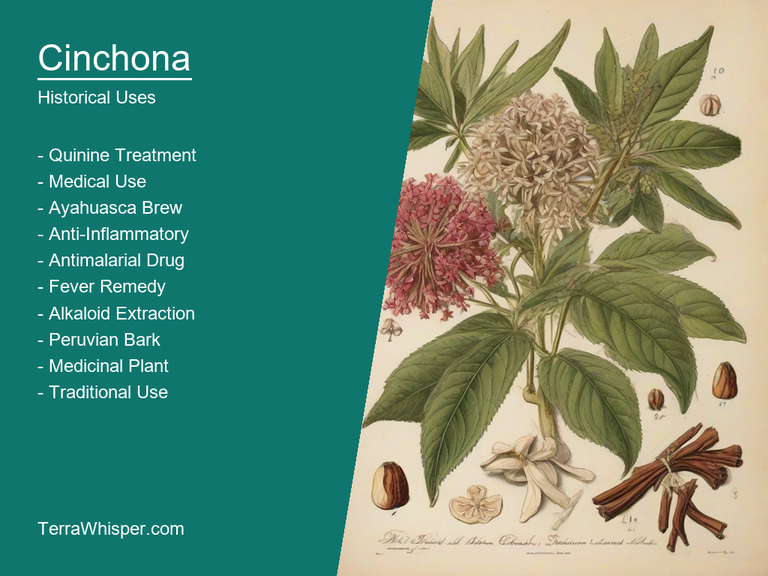

Cinchona, scientifically known as Cinchona officinalis, is a remarkable plant with numerous medicinal and culinary uses. Its bark has been utilized for centuries to treat malaria due to its quinine content, which acts on Plasmodium falciparum, the causative agent of the disease. Moreover, leaves have been used in traditional medicine for various digestive issues and as diaphoretic for fevers.
Cinchona is a stunning ornamental plant with attractive flowers that come in various colors like pink and purple. It's often grown in gardens for its showy flora during spring and summer seasons. The tree itself can grow up to 18 meters, creating a pleasing landscape feature in gardens with diverse plant life.
Cinchona officinalis is a member of the Rubiaceae family, originating from South America's Andean region. Its botanical history dates back centuries to its first use by the indigenous peoples and its eventual global propagation, due to its medicinal properties. The demand for quinine skyrocketed as European nations discovered the benefits it possessed, making it one of the most sought-after natural resources in history.
In this article, you will discover what are the medicinal and culinary uses of cinchona. Then, you'll learn how to cultivate it, what is its botanical profile, and how it was used historically.
Cinchona (Cinchona officinalis) has many health benefits, including its effectiveness against malaria, fever, and pain relief due to its alkaloid content called quinine. It also acts as a natural treatment for cardiovascular issues, respiratory problems, and digestive concerns. The tree is known for its medicinal properties since the 1600s and remains in use today.
The following illustration lists the most important uses of cinchona in medicine.

Quinine, an essential alkaloid in Cinchona, along with other compounds such as cinchonamine, quinidine, and cinchonidine, contribute to its therapeutic effects. These constituents possess antimalarial, anti-inflammatory, and analgesic properties which make it a valuable herbal remedy.
Both the bark and roots of Cinchona are used for various medicinal preparations. The most common forms include decoctions (a mixture prepared by boiling plant materials in water), tinctures (liquid extracts made from herbs), and powders or pills created by grinding dried parts of the tree. These preparations can be taken orally or applied topically for specific ailments.
Although Cinchona has numerous health benefits, it's also accompanied by potential side effects. Some people may experience gastrointestinal issues like nausea, vomiting, and diarrhea due to the high concentration of alkaloids present in certain preparations. Additionally, it might interact with other medications or cause allergic reactions for those who are sensitive to its constituents.
To minimize risks and maximize the advantages of using Cinchona, it's essential to follow a few precautions. Consulting a healthcare professional before starting any herbal therapy is vital as they can provide individualized recommendations based on one's medical history and needs. When using over-the-counter products containing quinine, read labels carefully and avoid excessive dosages.
Cinchona officinalis, commonly known as Cinchona or Peruvian bark, has culinary applications due to its unique flavor profile that resembles a bitter spicy taste with hints of citrus. The plant is native to South America and grows in mountainous regions, specifically the Andes. It is mainly used for its medicinal properties as it was traditionally used by indigenous people to treat malaria. However, culinary experts have discovered ways to incorporate it into certain dishes.
The following illustration lists the most common uses of cinchona for culinary purposes.

Cinchona's flavor can elevate both savory and sweet dishes. The bitter spice note can be paired well with hearty meats like beef or game meat, while the citrus undertones add an exciting contrast in dishes featuring fruits such as pineapple, papaya, or orange. In desserts, it complements chocolate-based treats, adding depth and complexity to flavors.
The edible parts of Cinchona tree mainly consist of its bark, which is harvested for culinary purposes. When dried, the bark can be ground into a fine powder, creating a bright pink dust that can be added as an ingredient in various dishes. It's vital to handle and process the bark carefully due to potential side effects related to high quantities consumed.
In the culinary world, there are several tips for effectively utilizing Cinchona bark. To avoid overpowering its impact, incorporate small amounts at first to assess taste preferences. Additionally, combining it with other spices can create unique and harmonious flavors that may even offset potential bitterness. It's recommended to experiment with pairing Peruvian bark with herbs like rosemary or thyme, which can enhance the savory characteristics.
As for possible side effects and toxicity when dealing with Cinchona officinalis, it is essential to be cautious about its consumption due to the presence of alkaloids such as quinine. High doses may lead to adverse reactions like nausea, vomiting, diarrhea, or seizures. Therefore, while cooking with this plant offers an intriguing culinary experience, it's crucial to use it in moderation and consult a medical professional before incorporating it into one's diet, especially if suffering from any underlying health condition that can be affected by its alkaloid content.
To grow Cinchona officinalis effectively, start with seeds or seedlings that have been properly stored in cool, dry conditions. Prepare fertile, well-draining soil in a partially shaded area, ideally receiving sunlight for at least half the day. The plant prefers acidic to neutral soil (pH 5.0 to 8.0) with adequate nutrients and water.
The following illustration lists the most important tips to cutlitvate cinchona.

For ideal growing conditions, the temperature should range from 16°C to 32°C during the day and not drop below 7°C at night. A consistent watering routine ensures appropriate moisture levels while maintaining a well-drained environment. Additionally, Cinchona officinalis appreciates moderate fertilization every two months with a balanced blend of essential nutrients.
Maintaining optimal plant health entails frequent inspection and pest management to protect against harmful insects. Moreover, it's crucial to prune the branches during winter to promote new growth and ensure proper shape. Regularly harvesting the bark for its quinine content can also help maintain a healthy, productive Cinchona officinalis plant.
Cinchona, with botanical name Cinchona officinalis, belongs to the domain Eukarya, kingdom Plantae, phylum Magnoliophyta, class Magnoliopsida, order Gentianales, family Rubiaceae, genus Cinchona and species officinalis. Common names for this plant include Peruvian bark, Jesuit's bark, or quinquina.
The following illustration display the botanical profile of cinchona.

There are numerous variants of Cinchona with minor differences in their appearance and characteristics. Cinnabarinium and Calisaya belong to a subgroup that exhibits yellow flowers, while others like C. succirubra and C. calisya lack the yellow coloration and display red flowers instead. However, they all share similar medicinal properties as anti-malarials, sedatives, or treatments for various health issues.
The morphology of Cinchona officinalis consists of a tree reaching heights up to around 30 feet, bearing opposite leaves with three to nine elliptic leaflets. Its fragrant flowers come in shades of pink to red and are arranged in clusters on long stalks. The trees yield orange-colored bark which is the primary source for extracting alkaloids like quinine, used as an effective treatment against malaria.
Cinchona officinalis has a geographic distribution mostly found in tropical regions of South America, specifically in Peru and Bolivia. Its natural habitat comprises cloud forests and high-altitude mountainous areas with cooler temperatures and wet climates. The plant is also cultivated in other countries like India, Indonesia, and Malaysia for its medicinal properties and potential use as an insecticide against mosquitos which spread malaria.
Cinchona officinalis has a life cycle that includes germination, growth, flowering, and reproduction. Germinating seeds develop into seedlings, then grow into mature trees with stems reaching up to 30 feet in height. The tree produces fragrant flowers that attract pollinators, leading to fruit development. Reproduction occurs when animals such as birds eat the fruit's fleshy part, discard and fertilize seeds outside its range, helping this medicinal plant adapt and spread throughout different regions of the world.
Cinchona officinalis, also known as the Peruvian bark, quina-quina, and cinchona tree, is a species of flowering plant native to South America. It is notable for its medicinal properties and historical significance in traditional medicine.
The following illustration lists the most well known historical uses of cinchona.

Traditional medicine utilized this tree for its healing effects. Its bark was particularly effective against malaria, a disease that plagued many people during the 17th century, thanks to its quinine alkaloid content. The Peruvian bark served as an essential remedy when conventional treatments failed or were unavailable, proving instrumental in saving countless lives.
Cinchona officinalis was also incorporated into divination practices among various cultures. Its bark was believed to have the power to foresee future events and reveal hidden truths. In some cases, it was used as a medium for channeling messages from spiritual entities or ancestors through visions that could guide people in their daily lives. This connection with mystical practices elevated the plant's status beyond just its medicinal uses.
Lastly, Cinchona is infused with legends and folklore that have evolved over time. One such tale involves a young Spanish noblewoman named Maria Regina de Austrias who was said to have discovered the plant's healing properties during the mid-17th century. The story goes that she observed how her servants recovered from illness after chewing on cinchona bark, and she began distributing it to other people in need of relief. This legend contributed to the widespread recognition of the tree's medicinal value.
In summary, Cinchona officinalis has a rich history spanning centuries that encompasses its role as an essential traditional medicine, involvement in divination practices, and entwining with legends and folklore. Its healing powers have been recognized since the 17th century through uses such as treating malaria and providing spiritual guidance.